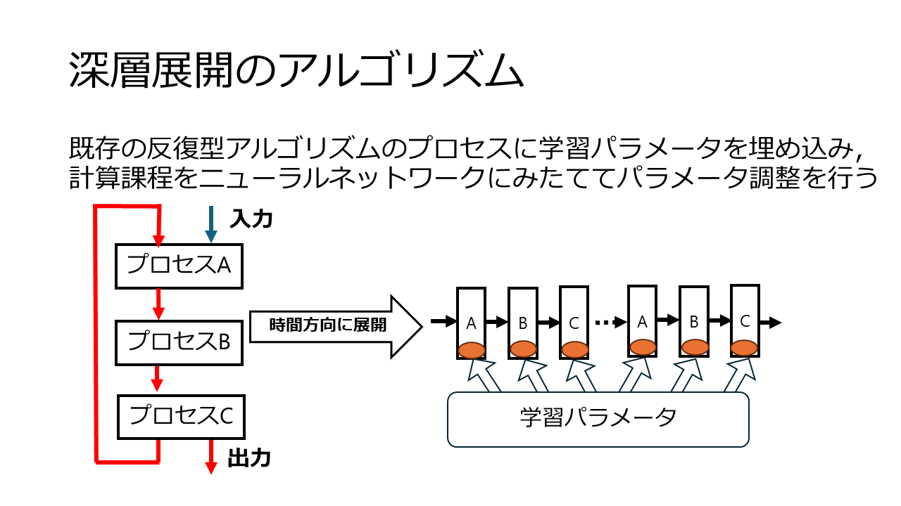

研究テーマ：「深層展開」
OVERVIEW
ここでは私の研究テーマである「深層展開」について、簡単にまとめる。
深層展開~概要~
最適化問題と呼ばれる特定の集合上で定義された実数値関数
または整数値関数についてその値が最小（もしくは最大）となる状態を解析する問題が存在する。
それを解くための手法が最適化手法であり、有名どころに「再急降下法」や「ニュートン法」などがある。
深層展開は機械学習を用いた最適化手法の1つで、モデルベース設計と機械学習の双方の利点を併せ持っているとさている。

深層展開~アルゴリズム~
深層展開は反復型アルゴリズムの計算過程を深層ニューラルネットワークに見立てて、埋め込んだ内部パラメータの 調整を行うことで最適化する。
研究内容
この深層展開をPythonのPythorchと呼ばれるフレームワークを用いて実装していくのが大まかな研究内容で、その中でも私はこの深層展開を用いて 「イベントトリガ制御系の同時設計」に挑戦している。ここからはイベントトリガ制御系について簡単に説明する。
イベントトリガ制御系
現在はタイムトリガ制御と呼ばれる制御手法が主流である。これは センサが観測した制御対象の状態から周期的に制御入力を更新する手法で、理論的な実装が容易であるというメリットがある。 しかし、制御入力を更新する必要がない場合でもセンサから情報を受け取るため無駄な通信コストがかかってしまう。 そこで考案されたのが イベントトリガ制御である。これはある条件を満たした場合のみセンサから状態を送信するという手法で、 省エネルギが求められる現代において、注目を集めている。
研究のモチベーション
イベントトリガ制御系は、通信タイミングを決定するイベントトリガと、制御入力を決定するコントローラという2つの設計対象が存在する。
それらは挙動が互いの動作に依存しており"Dual effect"と呼ばれる制御信号の影響によって最適制御を考えるのが非常に難しいとされている。
従来法ではコントローラとイベントトリガをある仮定の下分離して設計していたが、最適性が犠牲になっていた。
そこで本研究では深層展開を用いてイベントトリガとコントローラを同時に設計することでイベントトリガ制御系の最適制御を実現することを目的としている。